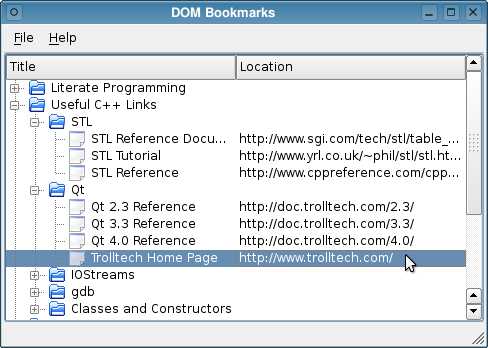

DOM Bookmarks Example
The DOM Bookmarks example provides a reader for XML Bookmark Exchange Language (XBEL) files that uses Qt's DOM-based XML API to read and parse the files. The SAX Bookmarks example provides an alternative way to read this type of file.

See the XML Bookmark Exchange Language Resource Page for more information about XBEL files.
Files: